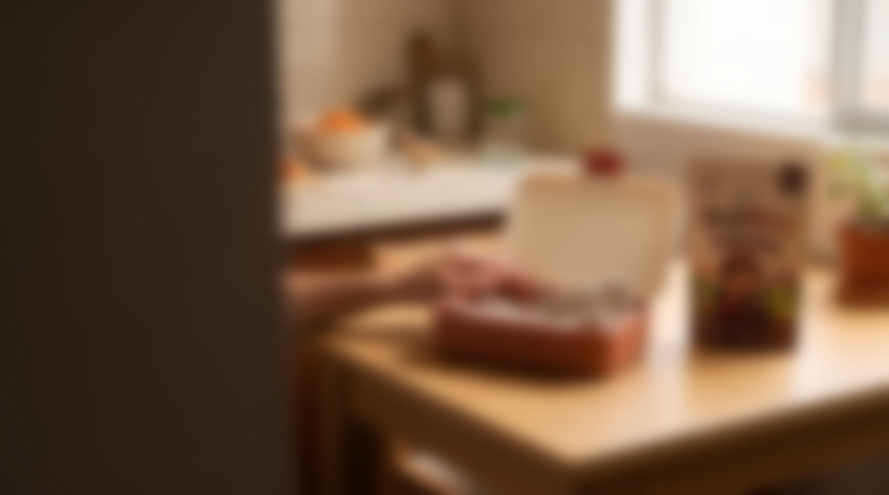
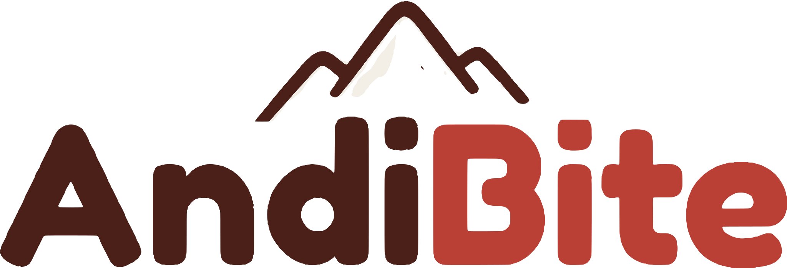
Plan de lanzamiento · Lima, 2027
Dulce para ellos. Tranquilidad para ti.
Grupo 2: Diana Ayoso · Patricia Cárdenas · Adela Robles · Angie Blas · Carlos Inga
Desarrollo y Lanzamiento de Nuevos Productos · UPN Los Olivos · Prof. Paola Zevallos
Papá y mamá saben que su hijo necesita hierro. El problema es que lo que le hace bien, no se lo come.
Lo que rechaza
«Mamá, eso olía feo y mis amigos me dijeron que parecía carbón.»Mateo, 7 años, sobre los nuggets de sangrecita que le preparó su mamá
Lo que hacen en casa
«Ella no sabe que es hígado.»Lourdes, mamá entrevistada, que lo esconde en bolitas o en la sopa
Lo que sienten
«Quieres ser la mamá perfecta, pero la realidad te aplasta.»Vanessa, mamá entrevistada
Todos tienen un truco. Y casi todos fallan por el sabor.
Entrevistas a profundidad
25
Cómo arman la lonchera, qué rechaza el niño, qué ya intentaron y qué valorarían.
Agosto y septiembre de 2026
Focus group 1 · concepto
8
El mini brownie fue el formato más elegido: 15 votos, frente a 10 de las trufas y 8 del wafer.
13 de septiembre · virtual
Focus group 2 · producto y marca
8
Degustación con el empaque impreso, en un colegio: sabor, concepto, marca y precio.
20 de septiembre · presencial
La regla que seguimos: primero probar, después preguntar el precio. El precio lo dice el público, no el equipo.
La barrera
Saben que la sangrecita es buena. La rechazan por cómo sabe y por lo que dicen los amigos del colegio.
Lo que funciona
El chocolate es «para todos los días» y «algo que sí le gusta».
La prueba
0 de 8
Ni en el sabor ni en el olor.
El valor
S/20 a S/24
Sin octógonos, saludable, con app y uno por día en su bolsita. Por unidad, S/4.50 a S/5.90.
De 30 a 45 años, con hijos de 4 a 11 años en colegio privado, en Lima. Trabajan los dos, planifican la semana y miran el precio por unidad.
Nivel B en Lima
618,637
El 18.4 % de Lima: siete veces más que el nivel A.
Nivel B1
164,746
La parte del B con más holgura para pagar por calidad.
Meta del año 1
<1 de 1,000
Una meta chica y alcanzable: unas 110 familias que compran cada semana.
Niveles socioeconómicos: APEIM 2025, sobre 3,362,157 hogares de Lima Metropolitana.
Buyer persona
San Miguel · jefe de logística · su esposa también trabaja · dos hijos de 9 y 6 en colegio privado · hogar de unos S/8,500 al mes.
«No me vendas salud, véndeme una mañana menos.»
Su mañana
Manda lo que el niño se come sin pelear.
Dónde compra
Y lo que le recomiendan en el chat del salón.
Qué mira
Compara con la galleta y la barra que ya compra.
Qué lo convence
Y entender en segundos qué lleva.
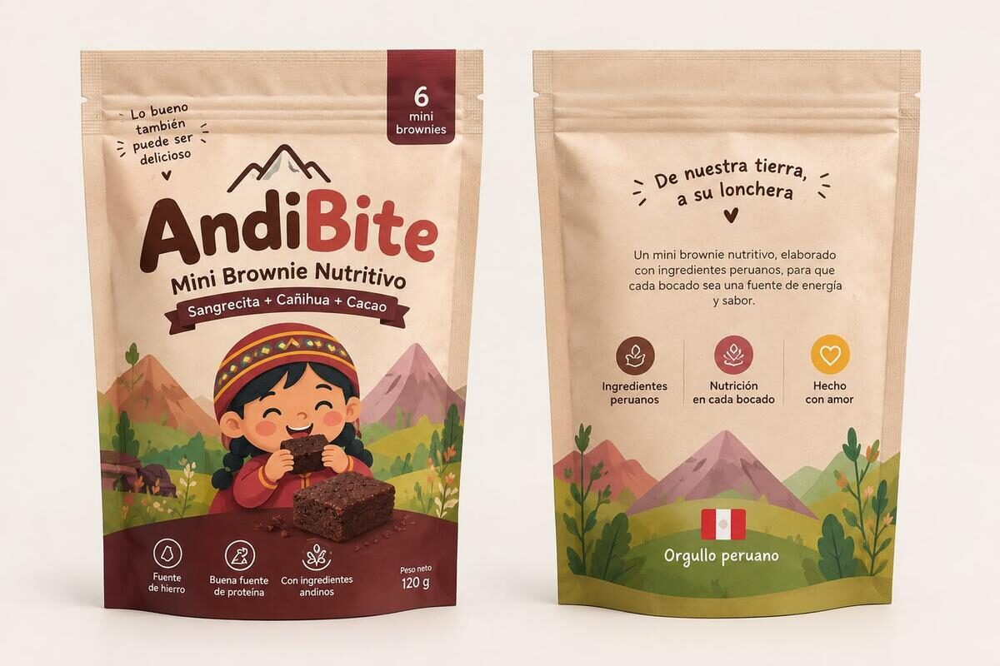
30 g
Cada brownie en su bolsita, uno por día
1.9 mg
de hierro en cada brownie, comprobado en laboratorio
0
octógonos
4
ingredientes peruanos: sangrecita de Lima, cacao de San Martín, plátano de Piura y cañihua de Puno
Dos sabores
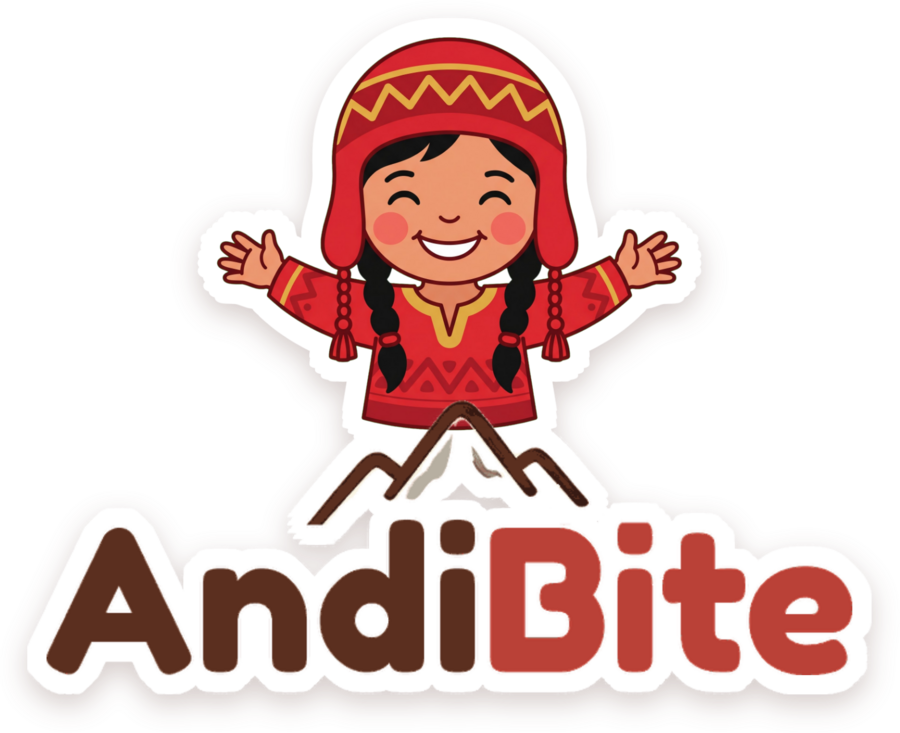
Slogan
El nombre
El niño del empaque.
Su llamita, en la app.
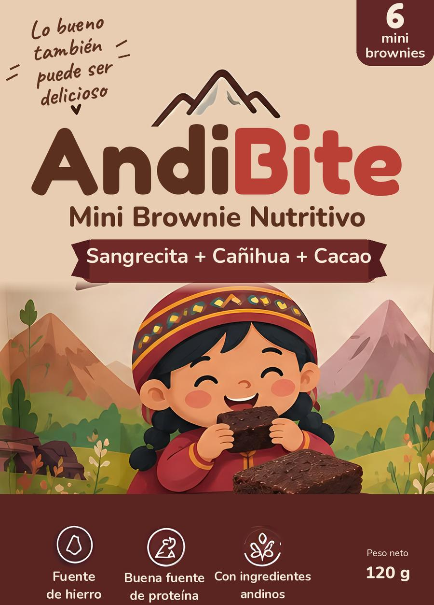
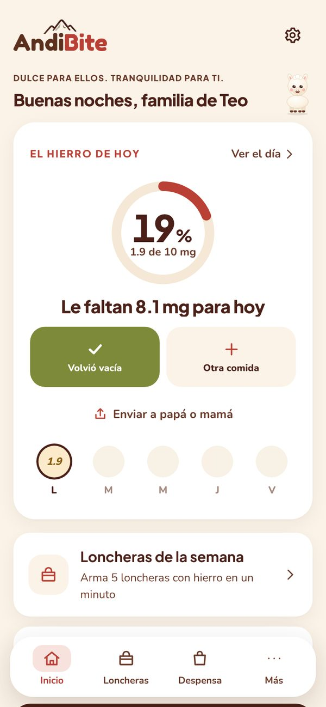
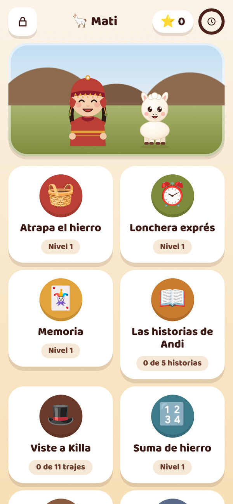
Se abre con el QR de la bolsa
Precio al público
Dentro de lo que dijeron las mamás al conocer el producto: S/20 a S/24 por 6 y S/4.50 a S/5.90 por unidad.
Con qué nos comparan · precio por unidad
Precios públicos consultados el 18 de noviembre de 2026.
La delegada junta los pedidos por WhatsApp, se paga por Yape y entregamos el lunes en la puerta del colegio.
Desde marzo de 2027 · 6 colegios, 16 en 2028
Donde la familia prueba junta. 6 de cada 10 compran el brownie suelto.
Desde marzo de 2027
Campo de Marte, Jesús María, los fines de semana del lanzamiento: degustación y contactos.
Marzo a junio de 2027
Real Plaza Salaverry: pop-up de lanzamiento y módulo en la vuelta al colegio.
Marzo de 2027 y febrero de 2028
WhatsApp une todo: cada persona que prueba deja su número y recibe dónde estamos y el aviso para volver a pedir.
Real Plaza Salaverry: zona con 51.7 % de hogares B, cerca de 3 de nuestros colegios y con módulos para marcas emprendedoras.
6 – 14 mar 2027
«Laboratorio ¿La notaste?»
15 feb – 15 mar 2028
La vuelta al colegio
Desde 2029
Cuando el volumen lo pague
Por qué en este orden
Cada paso se gana con el anterior
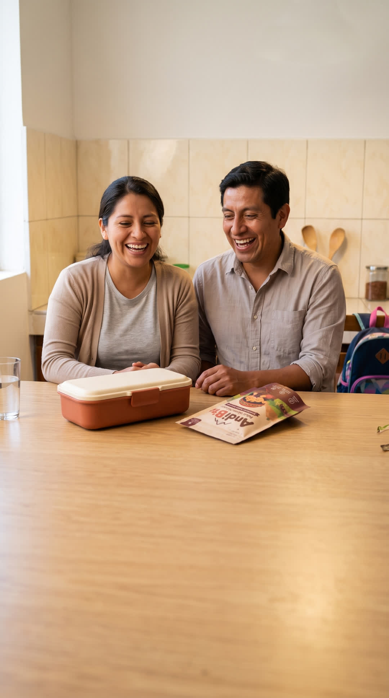
La campaña de lanzamiento
No la escondemos. Simplemente no se nota.
El insight
Por eso papá y mamá ya no le creen a otro «saludable» hasta probarlo ellos mismos.
La idea
Es lo que pasó con las 8 mamás: probaron, no la notaron, y al conocer el producto su valor se duplicó.
Lo que escuchan en 10 segundos, después de probar
El antes
Rallaste zanahoria en la torta. Le pusiste nombre de dinosaurio a la sopa. Hiciste nuggets de sangrecita. Y la lonchera volvió llena: «Mamá, olía feo».
El inicio
Cinco estudiantes de la UPN escuchamos esas historias. Pusimos sangrecita en un brownie de chocolate. Ocho mamás lo probaron. Ninguna la notó.
El después
No hace milagros. Es el dulce de la lonchera que sí suma hierro, sin octógonos y uno por día. Una pelea menos cada mañana.
En una línea: papá y mamá probaron mil trucos para que su hijo coma sangrecita; nosotros la pusimos en un brownie que ocho mamás probaron sin notarla.
Nov – dic 2026
«Todos tienen un truco. ¿Cuál es el tuyo?»
Ene – 5 mar 2027
«Este brownie lleva algo que ocho mamás no notaron. ¿Qué crees que es?»
6 – 14 mar 2027
«Lleva sangrecita. ¿La notaste? Pruébalo este sábado.»
Mar – jun 2027
«Pásale la prueba.»
En el stand
Cada adulto prueba, responde si notó algo y se suma a la pizarra. Cada lunes publicamos la cifra real, también la de quienes sí la notaron.
En casa
Quien compró le da un brownie a otro adulto (la pareja, la abuela, el tío que todo lo nota), le pregunta qué lleva y graba su reacción con #LoQueNadieVe.
Por qué circula: sorpresa, un adulto real y una cifra que da que hablar. Si no se viraliza, igual vende: de cada 4 que prueban, 1 compra.
Creadores
10
Hacen «¿La notaste?» con su pareja o su mamá. Cada uno tiene su palabra clave para WhatsApp.
Por qué
28 %
Frente a 7 % que confía en influencers grandes (Ipsos Perú, 2025).
Prensa
«Cinco estudiantes de la UPN pusieron sangrecita en un brownie. Ocho mamás lo probaron y ninguna la notó.»
AndiBite · brownie con hierro
El brownie de la lonchera que lleva algo que casi nadie nota. ¿Tú lo notarías?
Pídelo para el salón por WhatsApp
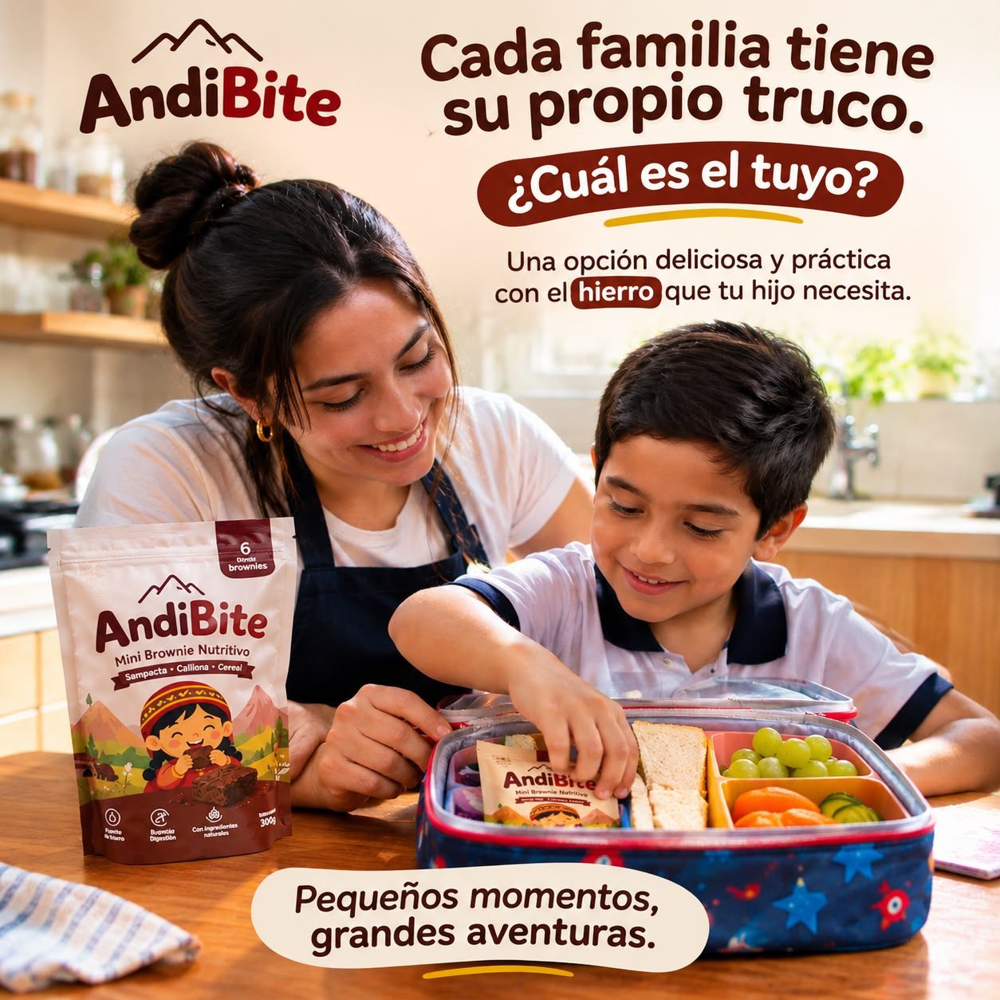
Todos tienen un truco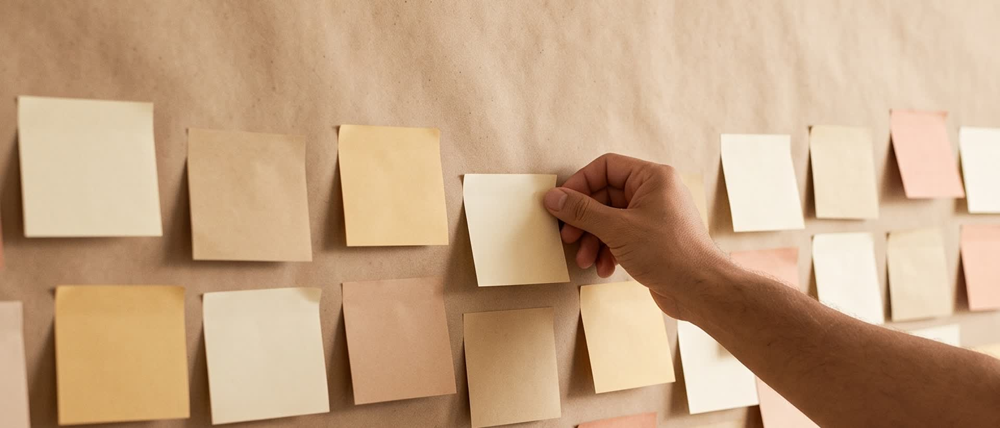
¿Cuál es el tuyo?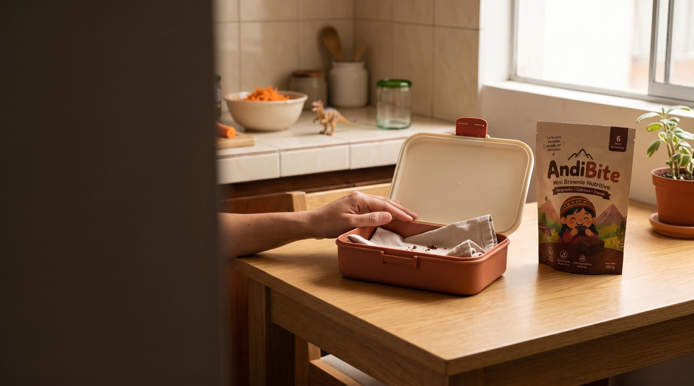
La historia en 60 s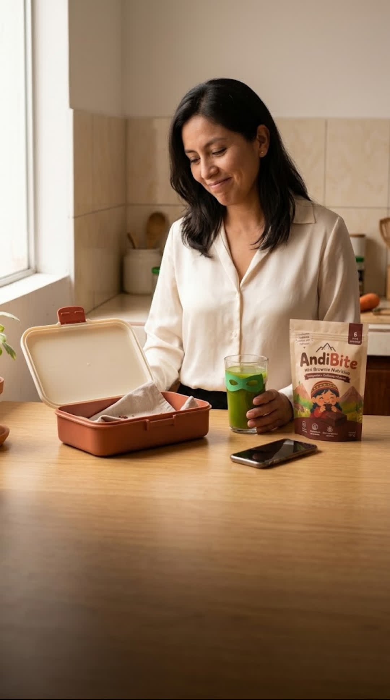
Lleva algo que 8 mamás no notaron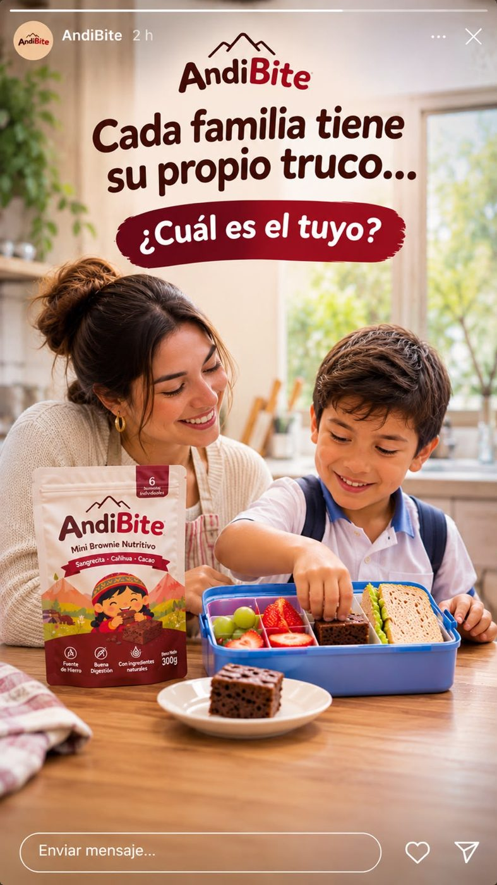
Pásale la prueba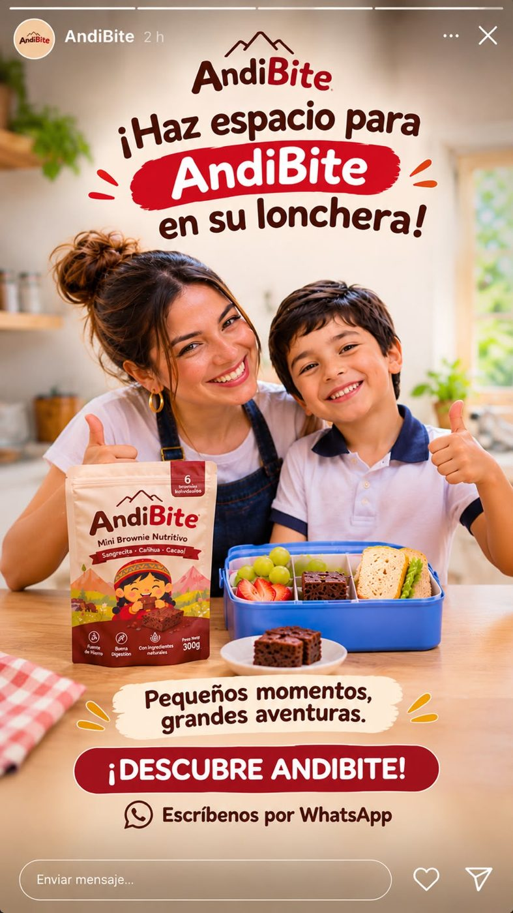
Pídelo para el salón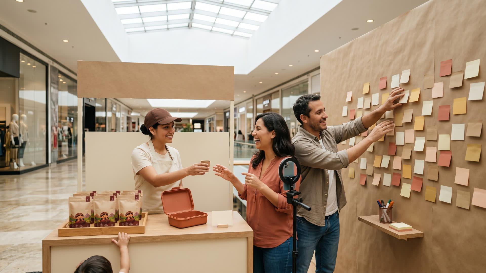
Este sábado estamos en…En qué se invierte · S/15,040
| Acción | S/ |
|---|---|
| Community manager y videos de reacción | 5,500 |
| Pauta en Meta y TikTok, solo a mayores de 18 | 2,950 |
| Pop-up «Laboratorio ¿La notaste?» | 2,600 |
| Embajadores y muestras en colegios | 1,920 |
| Creadores (papás y mamás) y prueba en la calle | 1,500 |
| Kit del stand, volantes, prensa y premios | 570 |
| Total | 15,040 |
Cuánto pesa
14 %
de la venta del primer año, como un lanzamiento de alimentos. En 2028 baja a 8 %, porque ya hay recompra.
De dónde sale: del aporte de los socios en 2027 y de la venta desde 2028.
Cómo se mide: cada contacto de WhatsApp debe costar S/8.23 o menos.
Fuentes · S/100,000 hasta diciembre de 2028
| Fuente | Cuándo | S/ |
|---|---|---|
| Aporte de los cinco socios | Dic. 2026 | 50,000 |
| Segundo aporte o inversionista, en acciones | May. 2027 | 35,000 |
| Préstamo de caja municipal, 24 cuotas | Ene. 2028 | 15,000 |
| Total | 100,000 |
Además, preventa de 133 bolsas en febrero de 2027 (S/2,900). Postulamos a StartUp Perú (hasta S/60,000 de capital semilla): si se gana, reemplaza al segundo aporte y al préstamo.
En qué se usa
| Inversión inicial | 25,432 |
| Marketing 2027 | 15,040 |
| Operación hasta el equilibrio | 39,863 |
| Cuotas del préstamo 2028 | 9,581 |
| Caja al cierre de 2028 | 10,086 |
La caja nunca baja de S/5,745.
2027
33,238
S/127,847 en ventas · 6 a 10 colegios
2028
72,336
S/272,912 en ventas · 16 colegios
Equilibrio
Mayo 2028
Con unos 6,700 brownies al mes: 22 por colegio y día.
Por brownie en bolsa
S/1.03
S/1.37 cuando el costo de producir baja a S/1.77 en 2028.
Resultado
−44,366 · −16,363
La pérdida de arranque está financiada y se detiene en el mes 17.
Equipo
4 roles
Gerente, coordinadora de ventas, promotores por día y community manager.
Una pelea menos cada mañana.
Grupo 2 · UPN Los Olivos · Diana Ayoso · Patricia Cárdenas · Adela Robles · Angie Blas · Carlos Inga